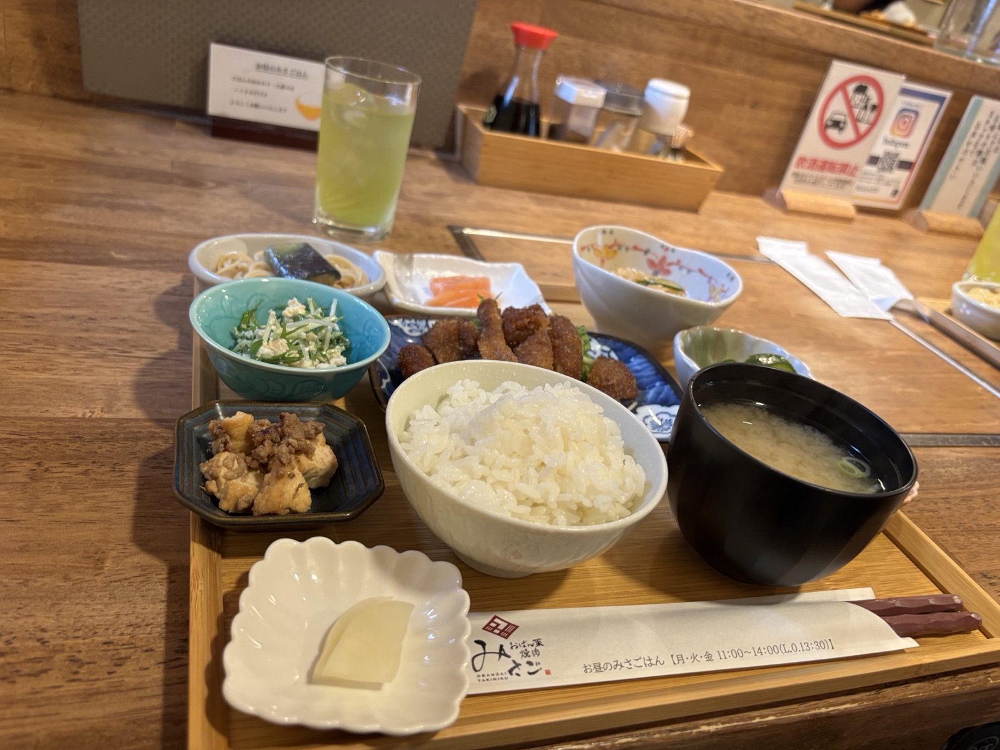
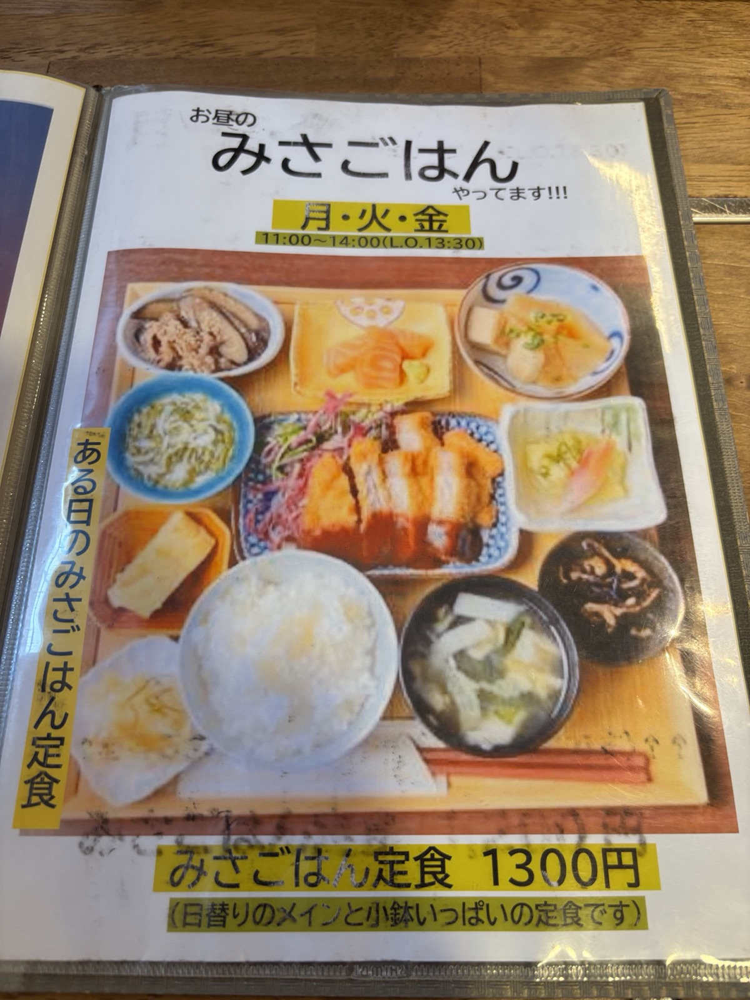
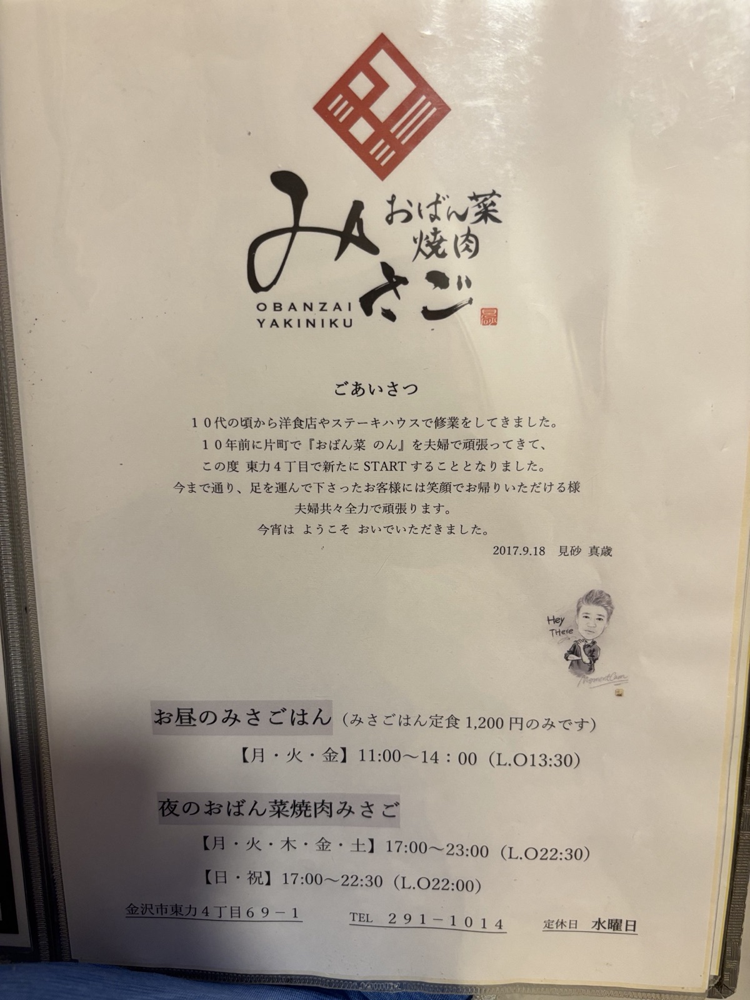
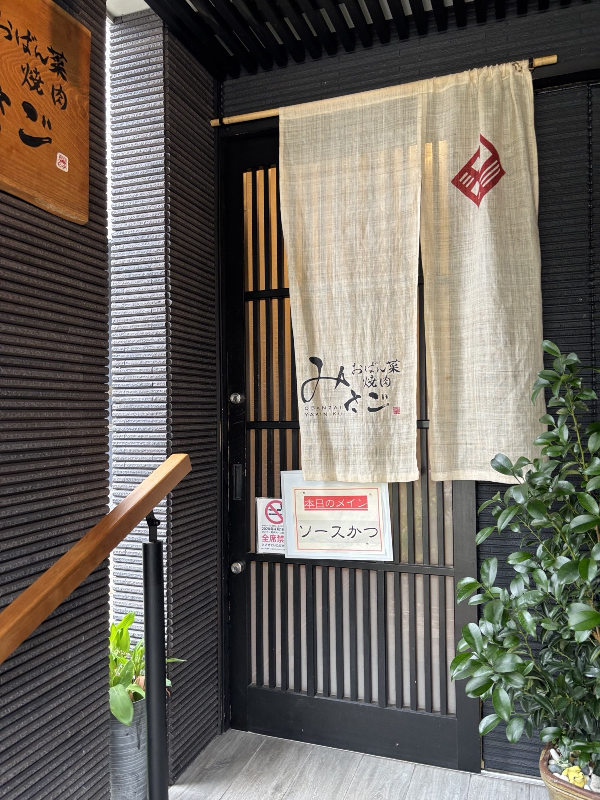
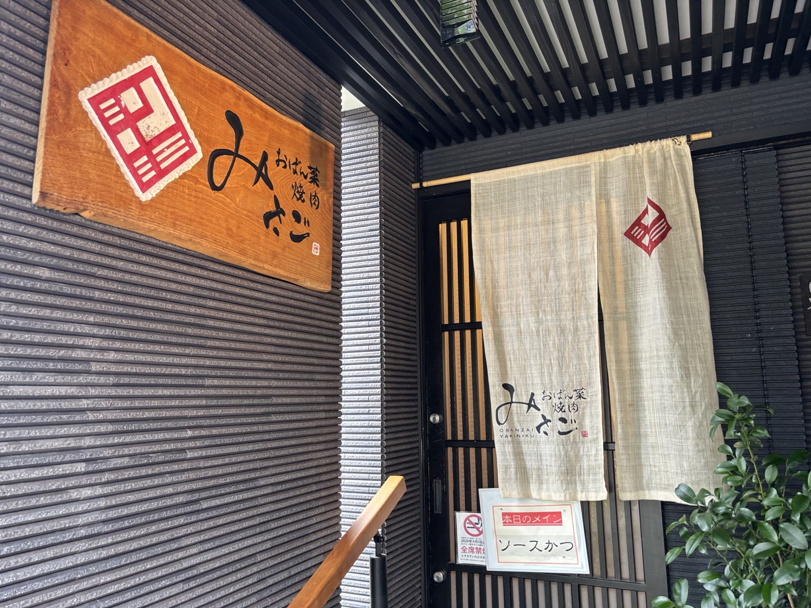

おばん菜焼肉みさご






ランチの定食は「みさごはん定食」１種類のみですが、メインと小鉢がいっぱいでサーモンのお刺身まで付いていて大満足でした。いろんなお惣菜を少しずつ食べられるので栄養バランスも満点。日替わりのメインは訪問時は「ソースかつ」で、ボリュームもしっかり。ごちそうさまでした。
| 名前 | おばん菜 焼肉 みさご |
|---|---|
| 場所 | 〒921-8015 石川県金沢市東力４丁目69-1 |
| ランチ営業 | 月・火・金 11:00〜14:00（L.O.13:30）／みさごはん定食 1,300円 |
| 定休日 | 水曜日 |
| 行った日 | 2026年6月26日（ランチ） |
| @obyn335 | |
| 食べログ | おばん菜 焼肉 みさご（食べログ） |
※営業時間・定休日は訪問時にお店で確認した情報です。お出かけ前に最新情報をご確認ください。
📍 Googleマップで見る